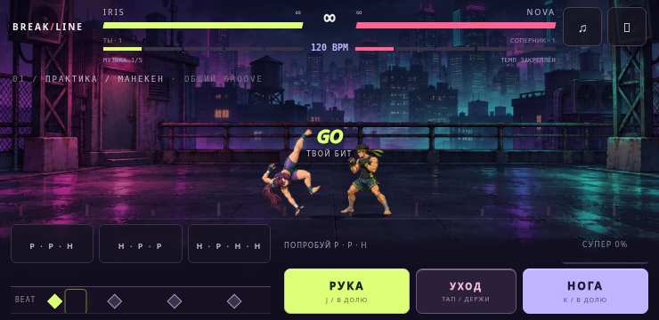
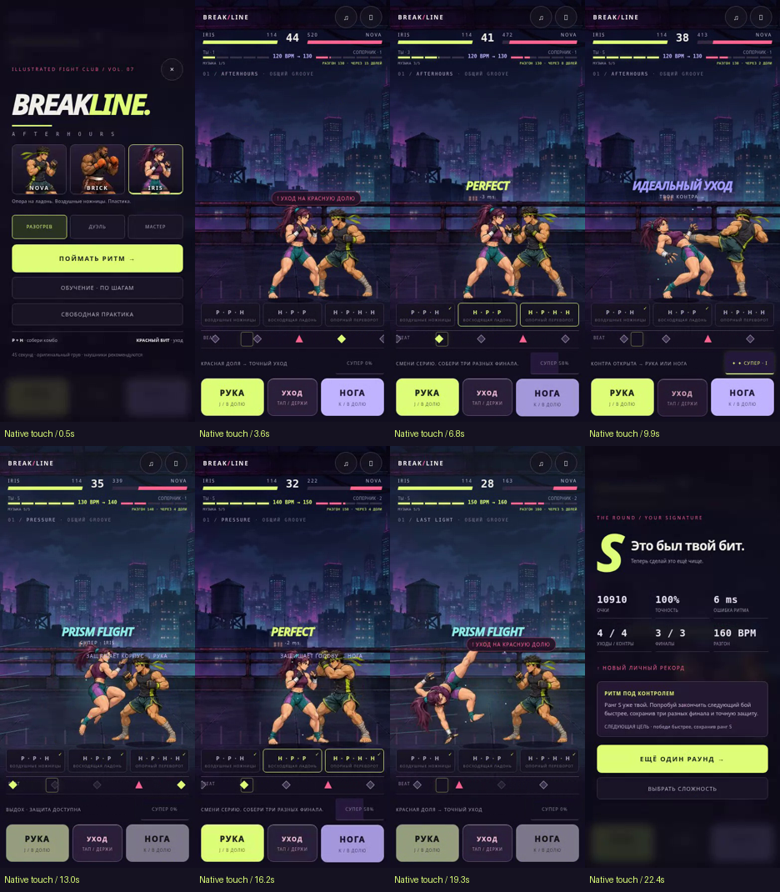
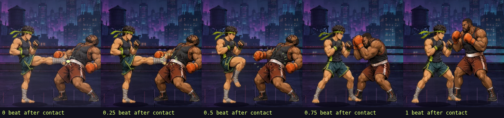

NOVA: победа, 170 BPM
Три разных финала, суперов 3, уходов 8.
← ИГРАТЬ · AIRFLOW / 3.7
Один проверенный HTML, 15 согласованных отчётов. Материалы ниже — контрольные постановки и настоящие автоматические сенсорные бои Chromium; не проверка физического Android.

Первые четыре такта — 120 BPM (8 секунд). Затем +10 раз в два такта. 240 достигается примерно на 38–40-й секунде, а не на 17-й. Музыка и часы не перезапускаются, Groove и супер не меняют этот график. Быстрая победа может закончить бой раньше максимума. В практике можно закрепить темп; в уроке отдельный короткий пример 120→130.
Р·Р·Н — воздушные ножницы. Н·Р·Р — восходящая ладонь с отталкиванием. Н·Р·Н·Н — опорный переворот с отдельной подводкой. Супер соединяет опорное вращение и воздушную атаку. Урон, рецепты и условия стана сохранены.
18 секунд / 540 кадров и версия 0,5×. Контрольная постановка на 120 BPM против манекена: в каждой части свой рецепт, супер с учебным зарядом и OFF. Аудио воспроизведено тем же движком, не запись телефона.

Жёлтые точки — игровые контакты. Расстояние до реального непрозрачного контура: ножницы и супер 0 px, ладонь менее 4 px, опорный удар менее 1 px. Между контактами рисунок целый, без изменения длины конечностей. В опорной фазе поворачивается соответствующий рисунок, край ладони остаётся на полу. Это постановка существующих 144 рисунков; новых иллюстраций и платных генераций нет.



Проверены шесть размеров, Iris слева/справа и зеркальный матч. Полный растр с запасом за границей canvas выявляет обрезание, которое не видно при проверке только оставшихся на экране пикселей. Для акробатики предусмотрено место по горизонтали и высоте, без резкого зума в бою.

Три разных финала, суперов 3, уходов 8.
Три разных финала, суперов 2, уходов 3.
Три разных финала, суперов 2, уходов 4.
Стратегия читает состояние, все действия выполняются касаниями настоящих кнопок. Видео немое. Проверки не выдаются за игру человека или за физический Android; итоговый BPM не подменяется запланированным максимумом.

Второй правильный ввод защищает чистую связку, второй чистый контакт подтверждает удержание. Ошибка, OFF, пропуск и промах снимают его. После успешного финала оба восстанавливаются одну долю от контакта. Обычный промах / PERFECT-уход оставляет атакующего без действий на долю. Hitstop фиксирует контакт, музыка не останавливается. Собственные полные рецепты удержания ИИ не добавлены.
rules · combo-hold · threats · feedback · loader · browser · practice · runtime · groove · readability · overclock · airflow · live-bouts · reel · iris-reel
rules: 13002 · combo-hold: 654 · threats: 1469 · feedback: 436 · loader: 11 · browser: 128 · practice: 71 · runtime: 38 · groove: 10696 · readability: 295 · overclock: 398 · airflow: 5534 · live-bouts: capture · reel: capture · iris-reel: capture
Сохранены проверки правил, ритма 120–240, паузы, буфера, музыкальных слоёв, угроз и аудиозадержки. Дополнительно проверяются жёсткая геометрия рисунка, угол, опора, реальный контур контакта и сохранение трансформации до смены рисунка при прерывании. Архивные численные тесты скелета не являются измерением костей в рисованных кадрах.
Физический Android, динамики телефона и субъективное ощущение нового разгона требуют игрового теста. Кадровая анимация по-прежнему ограничена исходным числом рисунков; это не новая полная прорисовка всех промежуточных поз.
HTML SHA-256: 11b732f2cd86e7c337b50f7d52bd6dc0becbe6a5e69cea63de05e80aef4a4a53. Ветка afterhours-airflow; GitHub CI и фактическая публикация записаны в PROJECT_STATUS.md. Основная игра/main не изменяются.